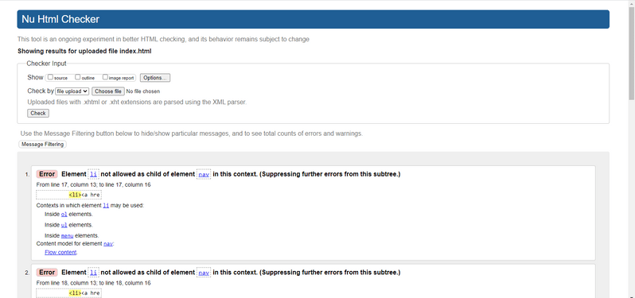
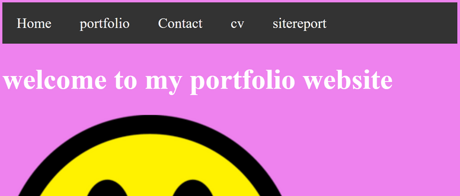
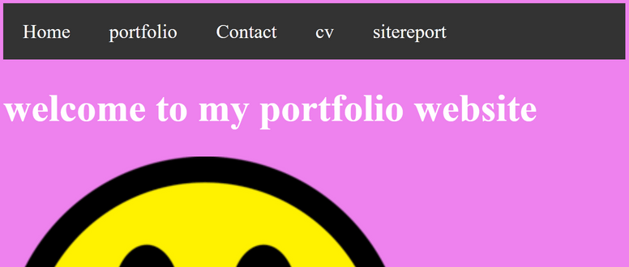
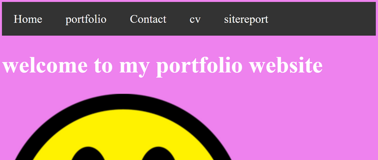

learning the basis of web development has been quite a knowlegable experince. i started the class late due to some issuses but i made sure i catched up the following week. the assignments was quite a challenging journey because of chosing the design and debugging mainly my design was influnced by some ideas i saw in codepen then the colour i choose was because of how i saw it fits my design. it was a challenging picking a design because of how i wamted mine to be differnet and msot of the ones i saw where all the same. i particularly had a hard time making the mobile.css but i did it to the best of my ability. the moat useful site that helped was W3schools especially in making my nav bar and then i got my icons for the footer and my cv from icon8 which had a feaure of html embedded. the method of debugging i used was trial by error which is trying and checking if it works on the webpage below are some mistakes that occured when making the webpage with the css and html validation. the html validation i did showed i had one problem which was the adding li to my nav but i couldnt fixed it because i used to beatutify my nav bar all the web pages was done by me with the help of some few sites and the vide recording of leactures uploaded on NILE
WEBSITE VALIDATION


REFERENCES
W3SCHOOLS (2021) How to- html and css, Available at: https://www.w3schools.com/howto/default.asp (Accessed: 14/01/2021) icons8 (2021) icons, Available at: https://icons8.com/ (Accessed: 14/01/2021).codepen (2021) portfolio, Available at: https://codepen.io/search/pens?q=portfolio (Accessed: 14/01/2021)
.png) 
